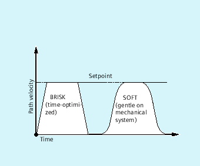

The following part program commands are available for programming the current acceleration mode:
"BRISK, BRISKA"
The single axes or the path axes traverse with maximum acceleration until the programmed feedrate is reached (acceleration without jerk limitation).
"SOFT, SOFTA"
The single axes or the path axes traverse with constant acceleration until the programmed feedrate is reached (acceleration with jerk limitation).
"DRIVE, DRIVEA"
The single axes or the path axes traverse with maximum acceleration up to a programmed velocity limit (MD setting!). The acceleration rate is then reduced (MD setting) until the programmed feedrate is reached.

Path velocity curve with BRISK and SOFT
Path velocity curve with DRIVE
| Command for activating the "acceleration without jerk limitation" for the path axes. |
| Command for activating the "acceleration without jerk limitation" for single axis movements (JOG, JOG/INC, positioning axis, oscillating axis, etc.). |
| Command for activating the "acceleration with jerk limitation" for the path axes. |
| Command for activating the "acceleration with jerk limitation" for single axis movements (JOG, JOG/INC, positioning axis, oscillating axis, etc.). |
| Command for activating the reduced acceleration above a configured velocity limit (MD35220 $MA_ACCEL_REDUCTION_SPEED_POINT) for the path axes. |
| Command for activating the reduced acceleration above a configured velocity limit (MD35220 $MA_ACCEL_REDUCTION_SPEED_POINT) for single axis movements (JOG, JOG/INC, positioning axis, oscillating axis, etc.). |
| Single axes for which the called acceleration mode is to apply. |
If the acceleration mode is changed in a part program during machining (BRISK ↔ SOFT), then there is a block change with exact stop at the end of the block during the transition even with continuous-path mode.
| Program code | |
|---|---|
| N10 G1 X… Y… F900 SOFT | |
| N20 BRISKA(AX5,AX6) | |
| ... |
| Program code | |
|---|---|
| N05 DRIVE | |
| N10 G1 X… Y… F1000 | |
| N20 DRIVEA (AX4, AX6) | |
| ... |
See also:
Influence of acceleration on following axes (VELOLIMA, ACCLIMA, JERKLIMA)
Activation of technology-specific dynamic values (DYNNORM, DYNPOS, DYNROUGH, DYNSEMIFIN, DYNFINISH, DYNPREC)